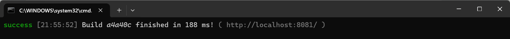
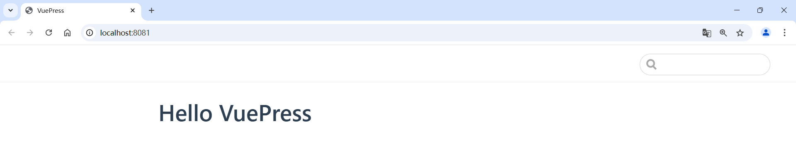

搭建个人博客网站
# 搭建个人博客网站
使用VuePress+GithubPage
# 环境准备
- Node
- Chrome浏览器或FireFox浏览器
- 一台电脑（Windows）
# 本地搭建
- 创建并进入一个新目录
在命令行中创建并进入新目录 vuepress-starter（可以自定义名字）：
cd vuepress-starter
- 使用npm（node包管理器）进行初始化（-y可以自动确认问题）
npm init -y
- 将 VuePress 安装为本地依赖
npm install -D vuepress
创建你的第一篇文档
VuePress 会以 docs 为文档根目录，所以README.md 相当于主页：
创建 docs 目录，并在其中创建 README.md 文件作为首页内容：
mkdir docs
echo '# Hello VuePress' > docs/README.md
- 修改 package.json 文件，添加一些启动命令：
"scripts": {
"docs:dev": "vuepress dev docs",
"docs:build": "vuepress build docs"
}
这样做的好处是你可以通过简单的命令来运行开发服务器或构建生产版本的静态文件，比如：
启动本地开发服务器：
npm run docs:dev构建用于部署的静态文件：
npm run docs:build
- 测试本地环境
npm run docs:dev
- 运行编译成功后，会有提示：

- 在浏览器打开这个shell窗口中的网址
http://localhost:8081（默认端口是8080，可能我的端口被占用了），可以看到如下内容：

# 优化页面
# 静态资源
有时候，一些图片是经常被用到的，我们可以将其放到一个公共文件夹里，这样就可以在不同的博客里都引用到了。
我们在 .vuepress 目录下新建 public 目录，然后放一个图片，例如 amiliya.jpg。此时文件夹目录结构如下：